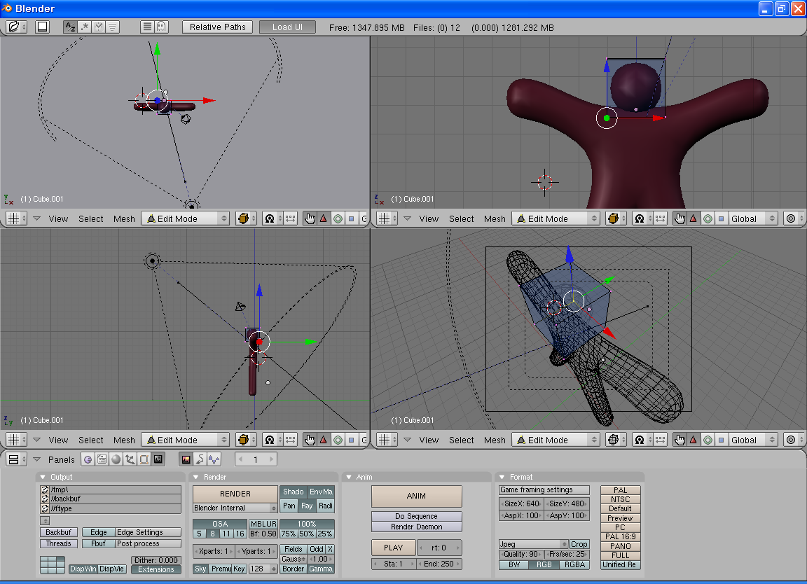

2006-04-26 01:05:41
http://blender.org 에서 배포되는 블렌더는 꽤 쓸만한 3D 툴이다. 모델링, 매핑, 애니메이션까지 지원하며 지인의 말에 의하면 이 용량에 이 정도의 기능을 가지는게 신기할 정도라고 한다.
물론 아직까지 3DMax 나 maya 에 비해서는 인지도도 부족하지만, 간단히 써본 결과로는 꽤 만족한다. 게다가 오픈소스에, 리눅스, 윈도우 둘다 돌릴 수 있다. 그리고 당연히 무료로 사용할 수 있다. 윈도우에서도 crash 가 전혀 없었고, 나의 3D 실력이 떨어지는 관계로 사이트에 있는 튜터리얼만 따라해보았는데 전혀 문제가 없었다.
3D 프로그래밍에 입문하는 프로그래머라면 곁에 두고 하나씩 모델링을 간단히 해서 테스트 프로그램을 돌리는데 쓰면 꽤 유용하지 않을까...
http://www.wimy.com/wiki/wiki.php/blender
